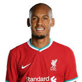

|  | Fabinho |
| Gender | Male |
| Ethnic | Brazilian |
| Job | Brazilian Footballer |
| Desc | The Brazilian arrived to AS Monaco on a season-long loan deal in 2013. He ended up spending two years on loan before signing a four-year deal in 2015. A key member of Jardim’s Ligue 1 winners, Fabinho has gone on to great success at Liverpool, helping the Reds win the Champions League in 2019 |
Affiliation
| Org | xxxx National Team |
| Club as Player | Liverpool FC |
| AS Monaco | |
| AS Monaco [Loan] |
2019 05 30 Retrieve
[Fabinho has revealed the role ‘agent’ Roberto Firmino played in his move to Liverpool] I remember that after one of my games for Monaco, against Marseille, where I’d played well and scored, Firmino sent me a message and we started to talk. He said: ‘the coach asked about you, what I thought about you, I talked you up a little bit’. We exchanged some messages for a while and I asked him some things about Liverpool and that was it for a while. Then Liverpool reached my agents, made them aware of the interest and set up a meeting with Klopp. We talked about his ideas for the team, work routine, tactics, physical training. My interest was rising, because I had always said that if I were to leave Monaco, it would only be to a team that really wanted me. I was very happy with Liverpool wanting to sign me and then made up my mind that it was the right thing to do. It was quick, right after the [Champions League] final against Real Madrid, the signing was made official.
[While delighted to have secured a transfer to Liverpool, Fabinho was made to wait for a Premier League bow] I played pretty much all the pre-season games, thought that I played well, and because of that, also thought that I would start playing earlier, not wait as much I did. Others players made sure that I was relaxed, they told me: ‘don’t worry, everyone that arrives goes through that, like [Andy] Robertson and [Alex] Oxlade-Chamberlain’. I was calm, tried to learn about the team, the other players, getting used to the intensity of the league. After a while, Klopp gave me the chances and little by little I could show my value and that I could be important to the team
2019 05 31 Retrieve
[Fabinho says that beating Manchester United in December helped kickstart his Anfield career] I knew it would be difficult and there would be times when I would be out of the team. In terms of adapting, there was a lot of preparation and a lot of hard work. The two games in particular that stood out for me was the game against Arsenal [at the Emirates] - that’s when I really understood the speed of the Premier League and the attention to detail that is required. And in terms of building my confidence, the stand-out game was against Manchester United. It was probably one of the best of the season. I managed to get an assist in that game and I really kept up with the rhythm and pace. I think we were much superior than Manchester United.
[Having watched last year’s final as Liverpool were beaten by Real Madrid in Kiev] I watched it and at the time I knew I was coming here to Liverpool. I didn’t really think about where I’d fit into the team or my position. I was watching it as a fan, so I wasn’t really focusing tactically. What really captured me was the passion of the fans and I wanted Liverpool to win
2019 06 14 Retrieve
[Fabinho says Sadio Mane is a complete player & makes Liverpool tick] Sadio Mane is a genuinely impressive player, he’s tireless, playing in every game with such high levels of intensity and concentration. His technical ability goes without saying, he always makes a difference for us. He’s a complete player - he gives you the option of a short pass or a long ball, he contributes to the build-up and creation of play as well. He’s a great player in amazing form, which is really important for his confidence. Off the pitch I chat with him quite a bit as we both speak French, my French is still better than my English. He’s a great lad. Sadio has been a really important player for us this season.
[He said when reflecting on his experiences since completing a big-money move from Monaco in the summer of 2018] Overall I think my first season at Liverpool was good. In my first season I knew there would be a learning and settling-in period. I went through this. It didn’t last that long but I remember it wasn’t easy starting afresh, I was left out for a few matches. Even though I was telling myself that I needed to work hard and be patient, it’s not easy being out of the team. But that’s in the past now, I started playing more. The more you play, the more you can enjoy your football. I think I became an important part of the team, I gave the manager another option he could depend upon. So I think it was a really good season
2019 08 29 Retrieve
[Fabinho: Liverpool will relish being the team to beat ahead of Champions League group stage draw] The Champions League is a special competition and we’re the reigning champions. There’s always going to be a lot of expectation about who we’re going to come up against. We’re relaxed about it. We’re fully aware that when we return from this international break there will be a more intense fixture schedule with midweek games, but that’s good - we like it. As we’re the reigning champions, all the other teams are going to focus much more on us, they’ll know more about our team. There’s always going to be a lot of expectation about who we’re going to come up against. We’re relaxed about it. We’re fully aware that when we return from this international break there will be a more intense fixture schedule with midweek games, but that’s good - we like it. As we’re the reigning champions, all the other teams are going to focus much more on us, they’ll know more about our team
2019 09 17 Retrieve
[Fabinho acknowledges that Liverpool are one of the favourites to claim more Champions League glory] [We are] one of the favourites, I think. The reigning champion is always the favourite and given Liverpool’s run of form over the last two competitions we must be considered one of the main contenders. But it doesn’t put any additional pressure on us, we know how to deal with it, we know how to handle the pressure. It won’t be a problem. The Champions League is the toughest competition in Europe with all the best teams involved. We’ll do everything to qualify for the Round of 16. It’s a case of taking things step by step
Last year we showed it was possible - normally a team with 97 points are champions. We were able to maintain the intensity and high standard in both competitions (Premier League and Champions League). It’s exhausting, it’s difficult, it demands a lot from the entire squad of players. It demands a lot of the coaching staff as well, working on recovery and preparation every two days for a high-level game. It is possible, but it’s very, very difficult, all the players have to be prepared and focused. The team has shown that it is focused, has ambition and is prepared for this challenge
2019 10 04 Retrieve
[Fabinho explains Liverpool lure and transition into one of the world’s best holding midfielders] After five seasons at Monaco, I knew it was the right time to leave to look for a new step in my career. I wanted to sign for a big club. I had no doubt I wanted to come to Liverpool, so much so that when the transfer window opened, the deal was immediately made official. It really is a huge club, one of the biggest in the world. The club has great ambition and that is what I wanted in my career, so I’m very happy to be here.
[They have Fabinho’s former coach to thank for his progression in that role, with Monaco boss Jardim having helped to unlock the potential in a man who is now being showered with praise] My time at Monaco was very good and I think I developed well from the moment I arrived to the moment I left. I stayed at Monaco for five years, working with Leonardo Jardim for four. He was a coach who helped me develop a lot in my career. It was him who made me take the big step of changing positions [from right-back]. We always talked about it, as I liked that position and he liked seeing me in that position. So he came to speak to me and decided he wanted to change. I accepted the challenge, but it’s not just about that - I have many good memories with him. We were Ligue 1 champions at Monaco in 2017. I had a great time there and made a lot of my friends. I’ll always hold that club dear to my heart.
2019 11 09 Retrieve
[Liverpool midfielder Fabinho is not convinced the top-of-the-table clash with Manchester City will define the Premier League title race] I don’t think the outcome last season was based on the results against Man City. But if we beat them then we will have a large points advantage over them, which will be important for us. But this game is always a bit more special because we have the chance to pick up points and stop a direct rival from picking up points. So we’re going to do all we can to win, but I’m not sure if this result will define the outcome of the season
[Fabinho holds an equal level of respect for what Man City have built under the Catalan] We’ve played against this City team before and they’ve shown us what they’re about. They’re great with the ball and they are hard-working, they’re great in attack and all of this makes them one of the best teams in Europe today. But in the Premier League there are so many good teams and we’ve managed to play well in these situations as well. So playing City will be another challenge, but I think we’re ready for it
2019 11 14 Retrieve
[Fabinho is happy with the ‘Dyson’ nickname bestowed upon him by Liverpool manager Jurgen Klopp] A few people call me this! Between us players I’m more known as Flaco but they’re cool nicknames. Before the coach used it [Dyson], another player used it - I think [James] Milner might have said it. It’s a cool nickname but the other one that the majority of the players use, Flaco, that was started by Virgil and everybody started calling me it
I think when the team does well an individual’s abilities shine as well. I wanted this season to be different because I had already adapted to the team and the league. I wanted to keep improving as a player and help the team out more. That’s what I’ve been aiming for. I’m happy for the praise that I’ve got but I know I still have got the scope to improve and I want to keep improving. There’s always scope to improve. I’m still young, I want to improve more, develop more. I’ve got personal objectives as well, so I’ve still got more to offer to the team
2020 01 12 Retrieve
[Fabinho reveals he is close to Liverpool return] I’m on the right path. We are in full recovery. I train individually. For example, I make changes in direction, but also exercises with the ball. I am very confident [about a quick comeback]. I think I can resume soon, but we will see with the medical staff
[Asked about his chances of being fit in time to face Atletico Madrid in the Champions League last-16 tie next month] I will be there of course. We can win the title, but we are not yet champions. We are on the right track. What we have done so far is incredible, but we must continue. I hope we will not crack. We have the confidence to continue like this. Despite the injuries, we continue to play at a high level. Lately, I haven’t been chatting too much with the players. I spoke with the Brazilians on the team. We’re just saying we have to keep going.
2020 01 12b Retrieve
[Fabinho has tipped Paris Saint-Germain star Kylian Mbappe to win the Ballon d’Or and hopes to team up with him at Liverpool in the future] Mbappe will have a Ballon d’Or before Neymar. I would like to welcome him to Liverpool. Sadio Mane deserved the Ballon d’Or. He’s the best player in Liverpool
[And the defensive midfielder is confident his side can go all the way under the guidance of coach Jurgen Klopp] Liverpool will be champion yes. It’s the best team in the world. Finish the season invincible? There are no plans to lose. Klopp is the best coach in the world, yes
[Fabinho was been linked with a return to France amid reports PSG were interested in signing him, while Real Madrid were also said to be monitoring him] I don’t regret not having signed at PSG. I could come back to Ligue 1 in the future. I have not been contacted by Real Madrid, but I would have liked to succeed there
2020 01 25 Retrieve
[Liverpool star Fabinho is adamant that Virgil van Dijk deserved to win the 2019 Ballon d’Or ahead of Lionel Messi] People always notice strikers more than defenders, but he should have won when you consider what he did individually and how he helped the team win the Champions League. He’s an amazing player, one of the best in the world
If you talk about everything he has conquered and won, Dani Alves is one of the best players to have ever played the position. He’s still incredible at 36 years old, one of the stars of the Brazilian national team, playing the way he always has. As for Alexander-Arnold, his passing is amazing. He has everything to become one of the best in the world
2020 01 25b Retrieve
[Fabinho says Kylian Mbappe’s arrival at Liverpool would give Jurgen Klopp a major selection headache] At this moment it would be a headache for Liverpool if we had him here because our attacking trio is very good. But I know Mbappe’s quality, he’s already one of the best players in the world, so he would obviously improve any team. Right now he plays for Paris Saint-Germain and we have to respect that
In the last few years, we have definitely been one of the best teams. You have to respect the numbers we’re achieving at the moment, even if you don’t want to talk about them. Records and stats don’t make us the best, but if we carry on doing what we’re doing we will win trophies. Then we have to keep doing that season after season
2019 11 29 Retrieve
[Liverpool have revealed that Fabinho will be out of action until 2020] Liverpool can confirm Fabinho suffered ankle ligament damage during the Champions League encounter with Napoli in midweek. The midfielder needed to be substituted after 18 minutes of the 1-1 draw at Anfield on Wednesday night after falling awkwardly during a challenge. Further assessment on the injury has discovered Fabinho will be out of action until the New Year. The Brazilian will begin a rehabilitation programme with the Reds’ medical team at Melwood as he works his way back to full fitness
2020 02 20 Retrieve
[Liverpool midfielder Fabinho admits his game is similar to that of Clasico foes Casemiro and Sergio Busquets, while he has also been quick to hail the relentless drive of Reds team-mates Sadio Mane, Mohamed Salah and Roberto Firmino] I like to organise and try to make good passes, because I have good vision when I receive the ball in the opposition half of the field. If I have space, I also want to be offensively important, but my first task must be defensive. Casemiro, Rodri, Busquets, we have a similar role. At Liverpool, I must pay attention to the sides, to close space in behind down the sides, and also help out in the middle
[Fabinho has conceded on a regular basis that he initially struggled to show his true worth with Liverpool] Normally when a Brazilian arrives in Europe he discovers that the time to think is reduced, that there is less space. But when you arrive in England there is even less time to react. That and the physical requirement took me a while to get used to. It took longer than normal to recover from the matches
[Contributions are being made to that cause across a star-studded squad, with Fabinho picking out a few of the leading lights] [Jordan] Henderson and [James] Milner know how to transmit motivation. The team is receptive because it’s very professional. But for the team, it’s incredible that the three stars, Mane, Salah and Firmino, are inexhaustible. They are an hour early in the gym every day. They always want more!